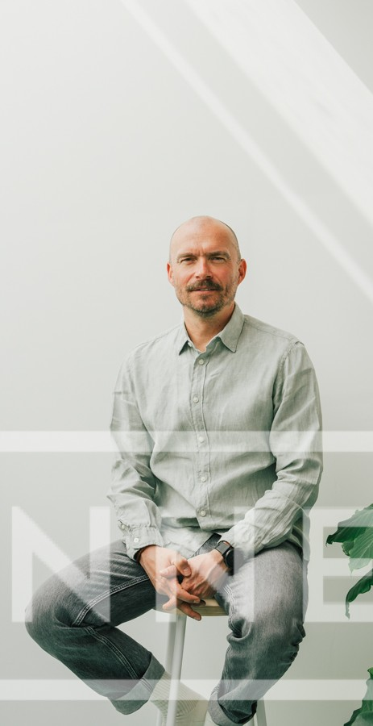

Wie ben ik
Geert Lambrechts
Waar beweging ontstaat, begint verandering.

Achtergrond
Al mijn hele carrière draait om één ding
Mensen en organisaties helpen om opnieuw in beweging te komen.
Ik heb zelf alle lagen van leidinggeven doorlopen — van arbeider tot (change-)managementfuncties, tot het coachen van directies en first line leadership. Daardoor weet ik precies hoe verandering voelt, niet alleen op papier maar vooral in de realiteit: op de vloer, in de meetingroom, tussen deadlines, KPI's en mensen met twijfels, ideeën en weerstand.
Mijn parcours liep door verschillende industrieën: productie, logistiek, retail, dienstverlening, techniek… Telkens met één rode draad: organisaties in volle verandering, die ergens vastzaten.
En telkens opnieuw zag ik hetzelfde: procesverandering werkt pas als mensen mee veranderen.
Sectoren
Productie · Logistiek · Retail · Dienstverlening · Techniek
Niveaus
Van arbeider tot directie — en alles ertussenin
Rode draad
Organisaties in volle verandering die ergens vastzaten
Hoe ik werk
Op de werkvloer, tussen de mensen
Ik stap niet binnen met een dikke presentatie, maar met open oren en scherpe observatie. Ik werk in de praktijk — daar zie ik de echte patronen, en daar geef ik ook feedback en coaching. Meteen, terwijl het gebeurt. Dat is waar de grootste leerkansen zitten.
Verbindend coachen
Om weerstand te minimaliseren en mensen mee te krijgen in de verandering.
Bouwen op wat bestaat
Vergroten van weerbaarheid en flexibiliteit vanuit bestaande krachten.
NLP
Voor bewustzijn, communicatie en mind set — het fundament van gedragsverandering.
Systemische coaching
Voor inzicht in dynamieken en patronen die het systeem onzichtbaar sturen.
Organisatieopstellingen
Voor wat onzichtbaar blijft maar wél stuurt — de verborgen krachten in een team.
LEAN procesoptimalisatie
Een praktische, nuchtere kijk op procesoptimalisatie met LEAN tools.
Waarom ik doe wat ik doe
Omdat ik weet hoe het voelt
Omdat ik weet hoe het voelt wanneer teams vastlopen.
Omdat ik zie welk potentieel vrijkomt wanneer gedrag verschuift.
Omdat het moment waarop mensen terug stroom voelen, elk traject de moeite waard maakt.
Leiderschap is geen titel. Het is gedrag. En iedereen kan groeien — als iemand je helpt zien wat je nog niet ziet.
Klaar om de beweging terug te vinden?
Ik help leiders, teams en organisaties de beweging terugvinden die nodig is om écht vooruit te gaan.